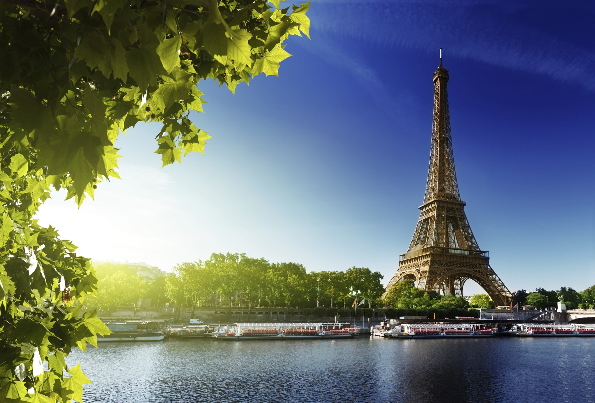
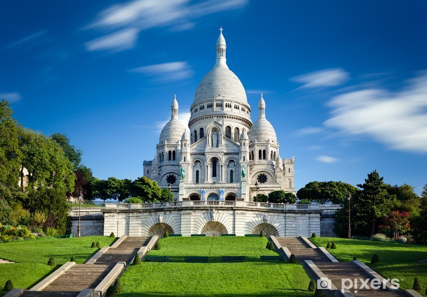
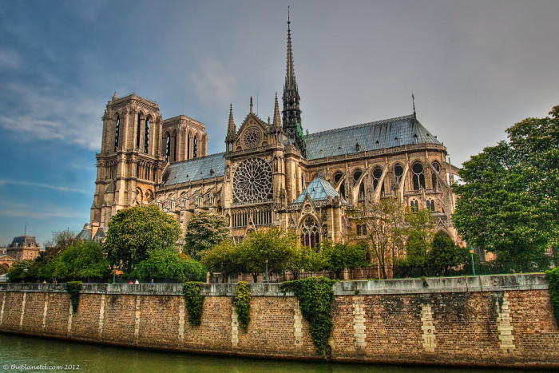
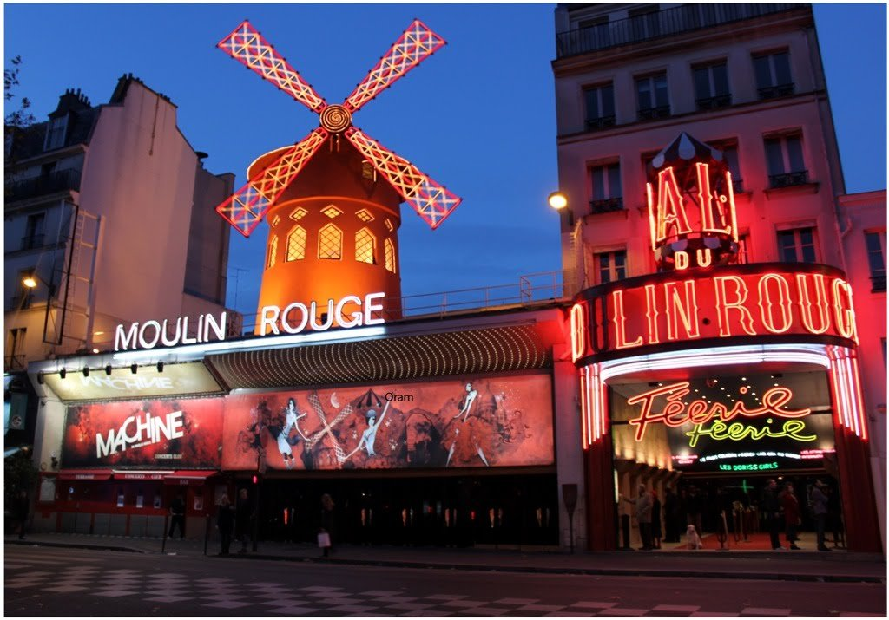
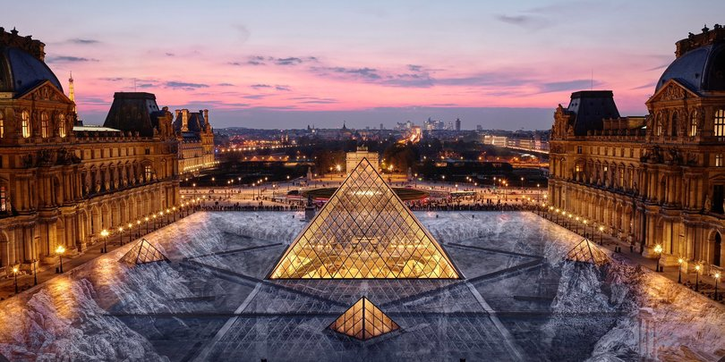

ეიფელის კოშკი
სახელი დაერქვა პროექტის ავტორის ინჟინერი გუსტავ ეიფელის პატივსაცემად და ის ქალაქის ყველაზე პოპულარული ტურისტული ღირშესანიშნაობაა, რომელსაც წელიწადში 5,5 მილიონზე მეტი დამთვალიერებელი ჰყავს. ეიფელის კოშკის აგებიდან 41 წლის განმავლობაში ის მსოფლიოს ყველაზე მაღალი ნაგებობა გახლდათ, მანამ სანამ 1930 წელს კრაისლერის ცათამბრჯენმა ეს სტატუსი არ წაართვა. ეიფელის კოშკის ასლები მდებარეობს მსოფლიოს არაერთ კუთხეში, მათ შორის ლას ვეგასში, კოპენჰაგენში, ვარნაში, ვიეტნამსა და სხვა ქალაქებში. დღეისათვის ეიფელის კოშკი ოფიციალურად ეკუთვნის ქალაქ პარიზსს, თუმცა თავისი არსებობის მანძილზე ის დაახლოებით 20-ჯერ იქნა გაყიდული.
მონტმარტი
მონმარტრი ხელოვნების სავანეა, ან იყო, და ახლა მარკეტინგულად გაპიარებული კარგი ტურისტული ზონაა. ასე იტყოდა ვინმე პედანტი, ისეთი ადამიანი, რომელსაც გულის ნაცვლად რაღაც ორგანო უდევს რომელიც მხოლოდ სისხლის მიმოქცევაზეა პასუხისმგებელი. მონმარტრის პატარა ქუჩებში სეირნობა სასიამოვნო თავგადასავალია - ვყიდულობთ პრინტებს პარიზის ხედებით, წითელ ქოლგას და პარიზულ ჩანთას, ვათვალიერებთ ნახატებს, ვათვალიერებთ ქუჩებს, ტეტრის მოედანზე თითოეულ მხატვართან მივდივართ. სურათებს ვიღებთ. ნორვინსის ქუჩაზე კი მევიოლინე უკრავს, ვჩერდებით, ვუსმენთ, ფულს ვჩუქნით. მევიოლინე ჩერდება, გვიღიმის და ბედნიერ მოგზაურობას გვისურვებს.
ღვთისმოშბლის ტაძარი
პარიზის ღვთისმშობლის ტაძარი 15 აპრილს კატასტროფულმა ხანძარმა მოიცვა. ცეცხლმა ტაძრის სახურავი გაანადგურა და საგრძნობლად დააზიანა შიდა ფასადი. პარიზის მერის მოადგილემ, ემანუელ გრეგუარმა განაცხადა, რომ საკათედრო ტაძარს "კოლოსალური ზიანი" მიადგა. სამაშველო ჯგუფები ისტორიული ნაგებობის გადარჩენის იმედს არ იძლეოდნენ. ჯერჯერობით უცნობია, რამ გამიწვია ხანძარი, თუმცა პარიზის პროკურატურა აცხადებს, რომ ცეცხლის სარესტავრაციო სამუშაოების დროს, სავარაუდოდ, შემთხვევით გაჩნდა. უნიკალური არქიტექტურის მქონე ტაძარს 850 წელი ახლახანს შეუსრულდა. მის სანახავად პარიზში მსოფლიოს სხვადასხვა წერტილიდან ჩადიან და დღემდე გოთიკური სტილის უბადლო ნიმუშია.
ვაგრძელებთ პარიზის მონახულებას
მულენრუჟი
გიმას, ვინც პარიზი, სიყვარულის ქალაქი მოინახულა, როგორც ამბობენ, სიკვდილიც კი შეუძლია. მაგრამ, თუ „მულენ რუჟში“ არ შეიარე, ვერასდროს გაიგებ, რა არის სინამდვილეში პარიზი. მართლაც, საუკუნოვანი კაბარე მხოლოდ განუმეორებელი კანკანი როდია. ის არც მხოლოდ საინტერესო ისტორიაა, რომელიც რამდენიმე ფილმშია გადმოცემული (უკანასკნელი, 2001 წელს გადაღებული, შეუდარებელი ნიკოლ კიდმანით მთავარ როლში, მართლაც ფეერიული გამოდგა.
ლუვრის მუზეუმი
საფრანგეთის სიამაყე, მსოფლიოში ყველაზე სახელგანთქმული ლუვრის მუზეუმი (Musee du Louvre) პარიზის შუაგულში, მდინარე სენის მარჯვენა სანაპიროზე, ცენტრალური რივოლის ქუჩაზე მდებარეობს. მუზეუმი დამთვალიერებელთა რაოდენობის სიმრავლით დიდი ხანია მსოფლიო პირველობას არავის უთმობს. მილიონობით ადამიანის აღტაცებას იწვევს ულამაზესი და ამავდროულად ხანდაზმული ლუვრი.
ვარშავა
კრაკოვი